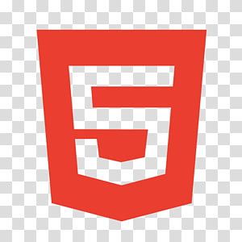
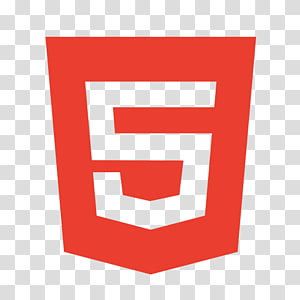

Qualifications


 

WHY CS = WHY ME
My passion for computer science is rooted in the challenge of transforming abstract ideas into practical solutions, a drive that has consistently shaped my academic and project experiences. I am particularly drawn to software development, artificial intelligence, and data-driven systems, where technical depth meets real-world impact.
One of my earliest projects, Aggie Assistant, combined Python, Tkinter, and OpenAI APIs to build a voice-recognition chatbot that streamlined user interactions. By integrating automated account login through audio commands, I reduced login time by over 150%, reinforcing my interest in how human-computer interaction can enhance efficiency and accessibility. This project deepened my appreciation for natural language processing and user-centered design.
My work on the AI Stock Market Predictor further solidified my enthusiasm for machine learning. Collaborating with peers and alumni from leading institutions, I applied regression models and data analysis techniques to forecast market fluctuations. This experience highlighted the power of data-driven insights and strengthened my resolve to pursue AI as a tool for tackling uncertainty in dynamic environments.
I’ve also explored the intersection of technology and human well-being through Wild Minds, a game-based website that employed JavaScript and predictive scoring algorithms to support early detection of dementia. Similarly, in research at Texas A&M, I trained generative AI models such as LLaMA and GPT to gamify NCLEX exam preparation, demonstrating how AI can support education in healthcare. These experiences reinforced my belief that computer science can extend beyond traditional boundaries to address societal challenges.
Beyond AI, I enjoy applying computational thinking to creative domains, as seen in my work developing a 2D dungeon crawler game in C++ and constructing 3D shipwreck models using Blender and Photoshop. These projects illustrate how problem solving, logic, and design converge across diverse areas of computer science.
Ultimately, my journey reflects a consistent theme: leveraging technical rigor and creativity to design impactful solutions. Whether through AI-driven healthcare tools, predictive models, or interactive applications, I see computer science as a medium to merge innovation with meaningful societal contributions.
Tools/Framework
Pandas, Tkinter, NumPy, Git, ATLAS.ti, Shape 3D, Blender, Photoshop
Certifications
Prutor@IITK(Python Programming), Inspirit AI Scholars Program
(AI & Machine Learning), AWS Certified Cloud Practitioner (In Progress)
Pandas, Tkinter, NumPy, Git, ATLAS.ti, Shape 3D, Blender, Photoshop
Certifications
Prutor@IITK(Python Programming), Inspirit AI Scholars Program
(AI & Machine Learning), AWS Certified Cloud Practitioner (In Progress)
Prutor@IITK(Python Programming), Inspirit AI Scholars Program (AI & Machine Learning), AWS Certified Cloud Practitioner (In Progress)